|
In-Context Learning
|
|
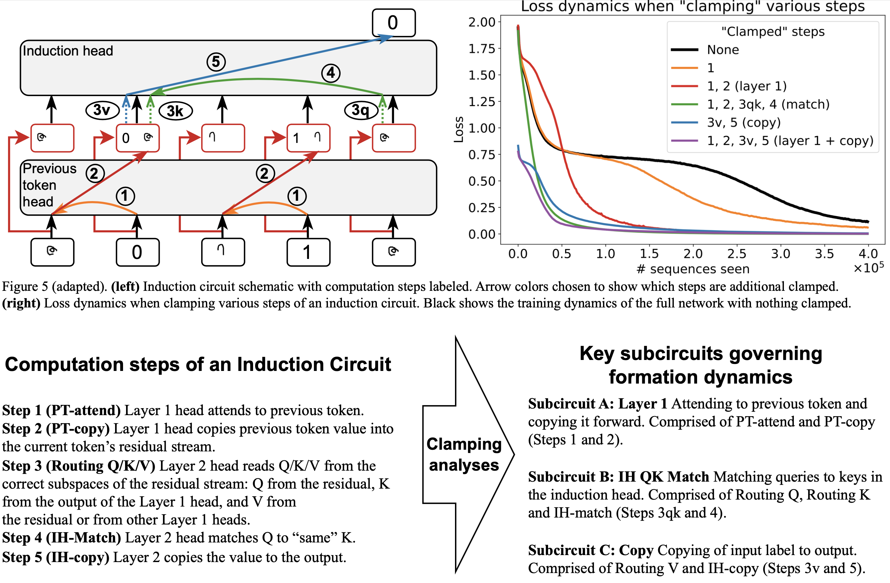
|
What needs to go right for an induction head? A mechanistic study of in-context learning circuits and their formation
Aaditya K. Singh,
Ted Moskovitz,
Felix Hill,
Stephanie C.Y. Chan*,
Andrew M. Saxe*
International Conference on Machine Learning (ICML), 2024 (Spotlight)
arxiv |
github |
tweet |
show bibtex
Induction heads are thought to be responsible for much of in-context learning. We take inspiration from optogenetics in neuroscience to introduce a framework for measuring and manipulating activations in a deep network throughout training. We introduce the method of clamping to better understand what gives rise to the phase change characteristic of induction circuit formation, finding that the interaction between three smoothly evolving sub-circuits yields this sudden drop in the loss.
@misc{singh2024needsrightinductionhead,
title={What needs to go right for an induction head? A mechanistic study of in-context learning circuits and their formation},
author={Aaditya K. Singh and Ted Moskovitz and Felix Hill and Stephanie C. Y. Chan and Andrew M. Saxe},
year={2024},
eprint={2404.07129},
archivePrefix={arXiv},
primaryClass={cs.LG},
url={https://arxiv.org/abs/2404.07129},
}
|
|
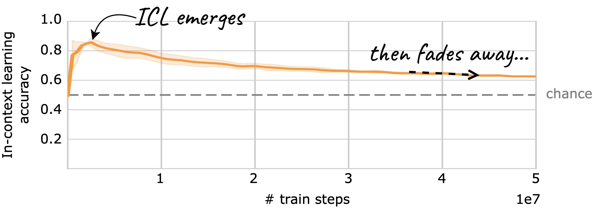
|
The transient nature of emergent in-context learning in transformers
Aaditya K. Singh*,
Stephanie C.Y. Chan*,
Ted Moskovitz,
Erin Grant,
Andrew M. Saxe**,
Felix Hill**
Neural Information Processing Systems (NeurIPS), 2023
arxiv |
neurips |
github |
tweet |
show bibtex
We train transformers on synthetic data designed so that both in-context learning (ICL) and in-weights learning (IWL) strategies can lead to correct predictions. We find that ICL is often transient, meaning it first emerges, then disappears and gives way to IWL, all while the training loss decreases, indicating an asymptotic preference for IWL. We find that L2 regularization may offer a path to more persistent ICL that removes the need for early stopping based on ICL-style validation tasks. Finally, we present initial evidence that ICL transience may be caused by competition between ICL and IWL circuits.
@inproceedings{singh2023transience,
author = {Singh, Aaditya and Chan, Stephanie and Moskovitz, Ted and Grant, Erin and Saxe, Andrew and Hill, Felix},
booktitle = {Advances in Neural Information Processing Systems},
editor = {A. Oh and T. Naumann and A. Globerson and K. Saenko and M. Hardt and S. Levine},
pages = {27801--27819},
publisher = {Curran Associates, Inc.},
title = {The Transient Nature of Emergent In-Context Learning in Transformers},
url = {https://proceedings.neurips.cc/paper_files/paper/2023/file/58692a1701314e09cbd7a5f5f3871cc9-Paper-Conference.pdf},
volume = {36},
year = {2023}
}
Reproduced by this recent paper in naturalistic settings, and this other paper in a different synthetic setting.
|
|
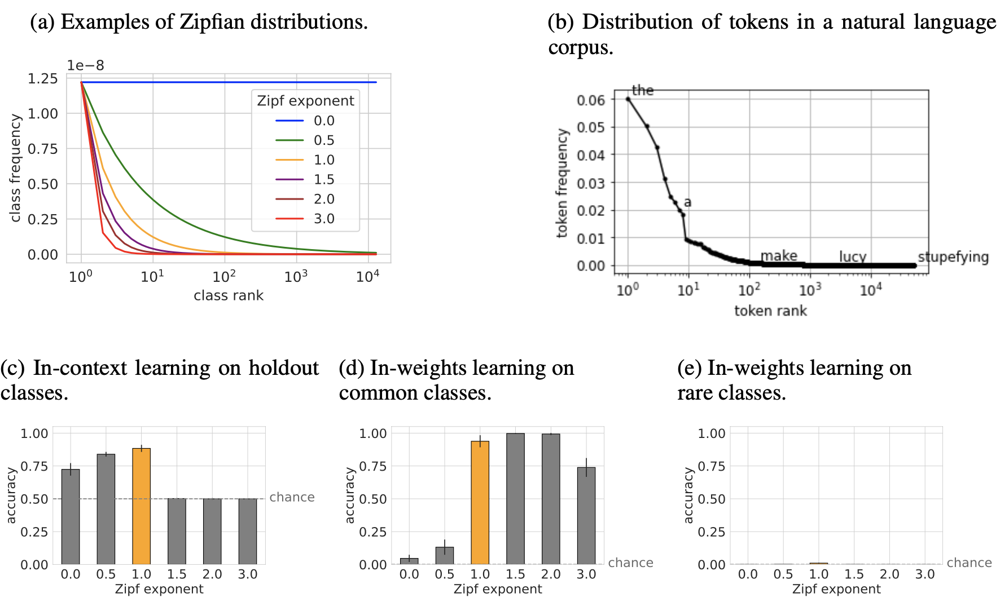
|
Data distributional properties drive emergent in-context learning in transformers
Stephanie C.Y. Chan,
Adam Santoro,
Andrew Kyle Lampinen,
Jane X. Wang,
Aaditya K. Singh,
Pierre H. Richemond,
Jay McClelland,
Felix Hill
Neural Information Processing Systems (NeurIPS), 2022 (Oral)
arxiv |
neurips |
github |
tweet |
show bibtex
Large transformer-based models are able to perform in-context few-shot learning, without being explicitly trained for it. We find that in-context learning (ICL) emerges when the training data exhibits particular distributional properties such as burstiness (items appear in clusters rather than being uniformly distributed over time) and having large numbers of rarely occurring classes. We found that in-context learning typically trades off against more conventional weight-based learning, but that the two modes of learning could co-exist in a single model when it was trained on data following a skewed Zipfian distribution (a common property of naturalistic data, including language).
@inproceedings{chan2022icldata,
author = {Chan, Stephanie and Santoro, Adam and Lampinen, Andrew and Wang, Jane and Singh, Aaditya and Richemond, Pierre and McClelland, James and Hill, Felix},
booktitle = {Advances in Neural Information Processing Systems},
editor = {S. Koyejo and S. Mohamed and A. Agarwal and D. Belgrave and K. Cho and A. Oh},
pages = {18878--18891},
publisher = {Curran Associates, Inc.},
title = {Data Distributional Properties Drive Emergent In-Context Learning in Transformers},
url = {https://proceedings.neurips.cc/paper_files/paper/2022/file/77c6ccacfd9962e2307fc64680fc5ace-Paper-Conference.pdf},
volume = {35},
year = {2022}
}
Our insights were used by this recent paper to elicit ICL in RL settings.
|
|
Large Language Models
|
|
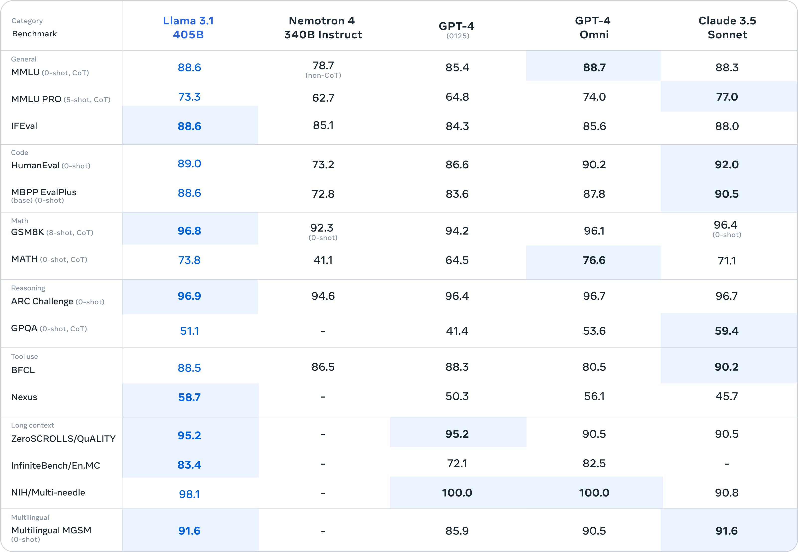
|
The Llama 3 herd of models
Llama team, AI@Meta, Contributors: Aaditya K. Singh, ...
arxiv |
github |
tweet |
show bibtex
Llama 3 is a herd of language models that natively support multilinguality, coding, reasoning, and tool usage. Our largest model is a dense Transformer with 405B parameters and a context window of up to 128K tokens.
@misc{llama3herdmodels,
title={The Llama 3 Herd of Models},
author={LLama team AI@Meta},
year={2024},
eprint={2407.21783},
archivePrefix={arXiv},
primaryClass={cs.AI},
url={https://arxiv.org/abs/2407.21783},
}
My contributions: Math pretraining data (S3.1.1), Scaling laws (S3.2.1), and Evals (S5).
|
|
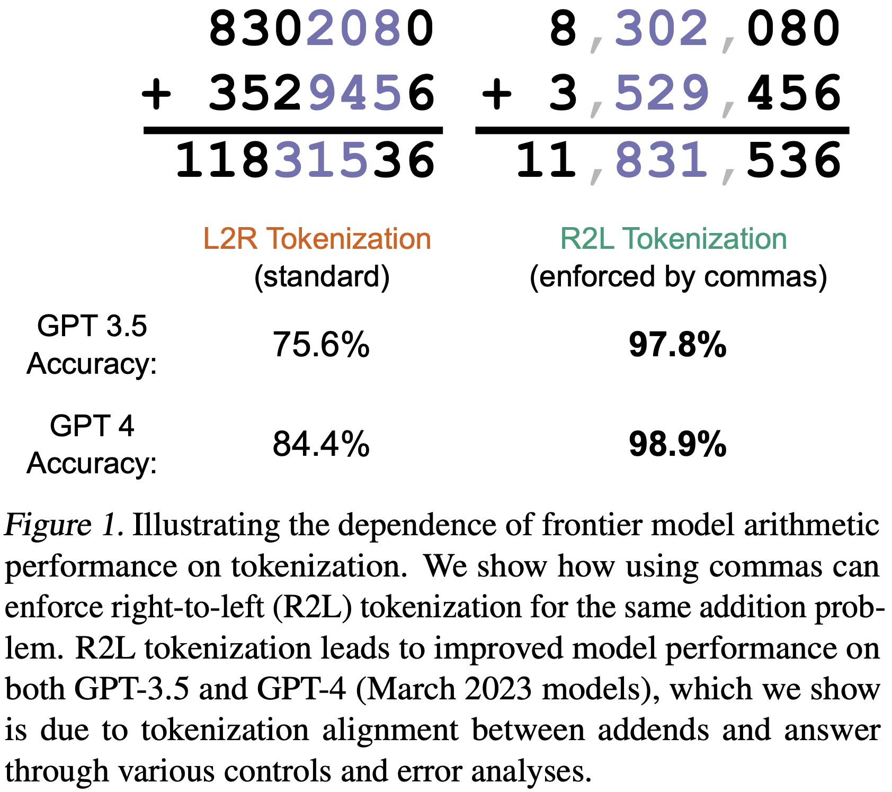
|
Tokenization counts: the impact of tokenization on arithmetic in frontier LLMs
Aaditya K. Singh,
DJ Strouse
arxiv, 2024
arxiv |
github |
tweet |
show bibtex
Through a series of carefully controlled, inference-time experiments, we find evidence of strong (scale-dependent) number tokenization-induced inductive biases in numerical reasoning in frontier LLMs. Specifically, we demonstrate that GPT-3.5 and GPT-4 models show largely improved performance when using right-to-left (as opposed to default left-to-right) number tokenization. Furthermore, we find that model errors when using standard left-to-right tokenization follow stereotyped error patterns, suggesting that model computations are systematic rather than approximate. These effects are weaker in larger models (GPT-4) yet stronger in newer, smaller models (GPT 4 Turbo).
@misc{singh2024tokenization,
title={Tokenization counts: the impact of tokenization on arithmetic in frontier LLMs},
author={Aaditya K. Singh and DJ Strouse},
year={2024},
eprint={2402.14903},
archivePrefix={arXiv},
primaryClass={cs.CL},
url={https://arxiv.org/abs/2402.14903},
}
Reproduced by this recent blog post in newer models (e.g., Llama 3). Claude 3, released after our work and with SOTA math capabilities, also notably uses R2L tokenization.
|
|
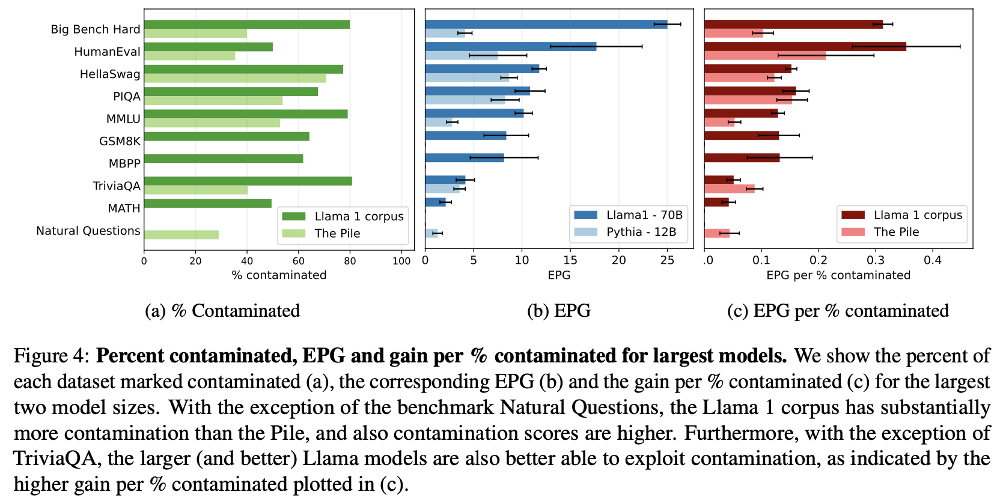
|
Evaluation data contamination in LLMs: how do we measure it and (when) does it matter?
Aaditya K. Singh*,
Muhammed Yusuf Kocyigit*,
Andrew Poulton,
David Esiobu,
Maria Lomeli,
Gergely Szilvasy,
Dieuwke Hupkes
In submission, 2024
arxiv |
show bibtex
Evaluation data contamination is defined as the presence of benchmark samples in pretraining data, and the subsequent effects on performance. While easily understood intuitively, it is surprisingly difficult to define precisely which samples should be considered contaminated and, consequently, how it impacts benchmark scores. We propose that these questions should be addressed together and that contamination metrics can be assessed based on whether models benefit from the examples they mark contaminated. We propose a novel analysis method called ConTAM, and show with a large scale survey that our method can be used to better understand evaluation data contamination and its effects. We find that contamination effects may be more prevalent than reported in recent LLM releases and can be scale-dependent. We also find that considering only the longest contaminated substring provides a better signal than other n-gram based metrics.
@misc{singh2024evaluationdatacontaminationllms,
title={Evaluation data contamination in LLMs: how do we measure it and (when) does it matter?},
author={Aaditya K. Singh and Muhammed Yusuf Kocyigit and Andrew Poulton and David Esiobu and Maria Lomeli and Gergely Szilvasy and Dieuwke Hupkes},
year={2024},
eprint={2411.03923},
archivePrefix={arXiv},
primaryClass={cs.CL},
url={https://arxiv.org/abs/2411.03923},
}
|
|
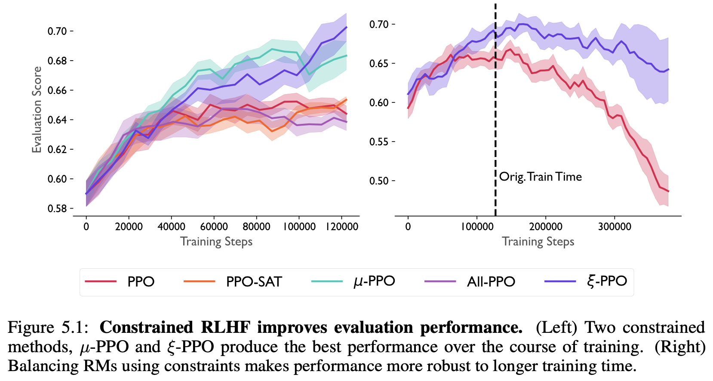
|
Confronting reward model overoptimization with constrained RLHF
Ted Moskovitz,
Aaditya K. Singh,
DJ Strouse,
Tuomas Sandholm,
Ruslan Salakhutdinov,
Anca D. Dragan,
Stephen McAleer
International Conference on Learning Representations, 2024 (Spotlight)
arxiv |
openreview |
tweet |
show bibtex
Optimizing large language models to align with human preferences via reinforcement learning from human feedback can offer suffer from overoptimization. Furthermore, human preferences are often multi-faceted, requiring many sub-components. In this work, we study overoptimization in composite RMs showing that correlation between component RMs has a significant effect. We then introduce an approach to circumvent this issue using constrained reinforcement learning as a means of preventing the agent from exceeding each RM's threshold of usefulness. Our method addresses the problem of weighting component RMs by learning dynamic weights, naturally expressed by Lagrange multipliers. As a result, each RM stays within the range at which it is an effective proxy, improving evaluation performance.
@misc{moskovitz2023confrontingrewardmodeloveroptimization,
title={Confronting Reward Model Overoptimization with Constrained RLHF},
author={Ted Moskovitz and Aaditya K. Singh and DJ Strouse and Tuomas Sandholm and Ruslan Salakhutdinov and Anca D. Dragan and Stephen McAleer},
year={2023},
eprint={2310.04373},
archivePrefix={arXiv},
primaryClass={cs.LG},
url={https://arxiv.org/abs/2310.04373},
}
|
|
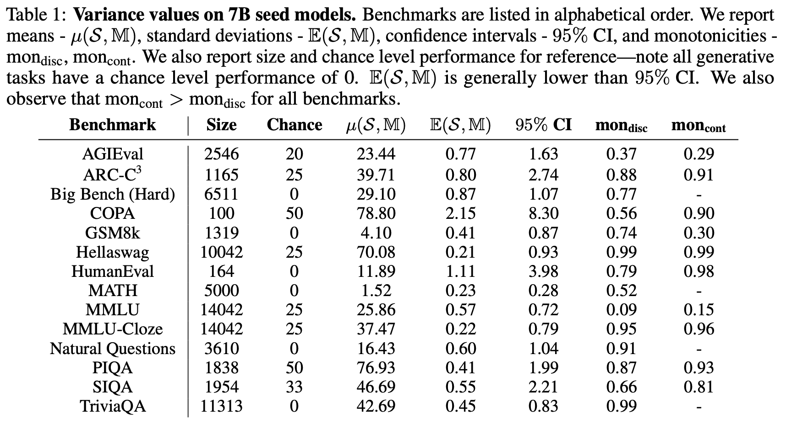
|
Quantifying Variance in Evaluation Benchmarks
Lovish Madaan,
Aaditya K. Singh,
Rylan Schaeffer,
Andrew Poulton,
Sanmi Koyejo,
Pontus Stenetorp,
Sharan Narang,
Dieuwke Hupkes
In submission, 2024
arxiv |
tweet |
show bibtex
We quantify variance in evaluation benchmarks through a range of metrics, including difference in performance across ten 7B 210B token runs with different initializations. We find that continuous metrics often show less variance (higher signal-to-noise), suggesting they may be more useful when doing pretraining ablations, especially at smaller compute scales. Furthermore, we find that methods from human testing (e.g., item analysis or item response theory) are not effective at reducing variance.
@misc{madaan2024variance,
title={Quantifying Variance in Evaluation Benchmarks},
author={Lovish Madaan and Aaditya K. Singh and Rylan Schaeffer and Andrew Poulton and Sanmi Koyejo and Pontus Stenetorp and Sharan Narang and Dieuwke Hupkes},
year={2024},
eprint={2406.10229},
archivePrefix={arXiv},
primaryClass={cs.LG},
url={https://arxiv.org/abs/2406.10229},
}
|
|
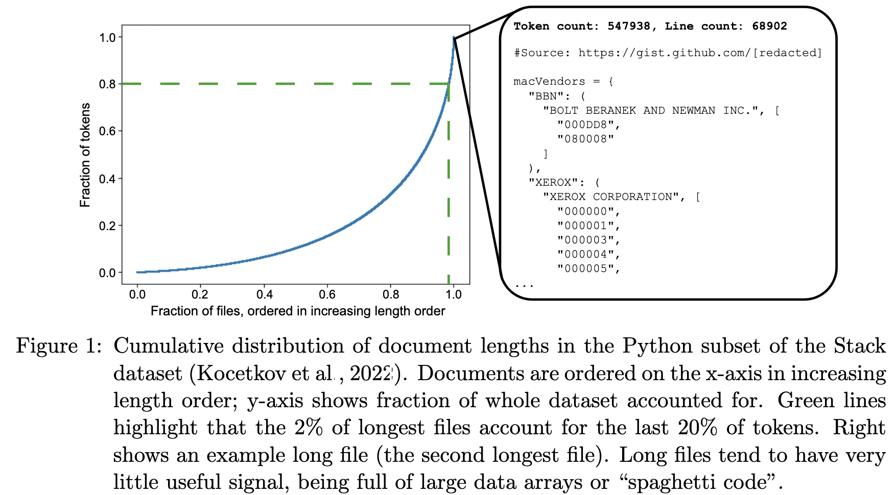
|
Brevity is the soul of wit: pruning long files for code generation
Aaditya K. Singh,
Yu Yang,
Kushal Tirumala,
Mostafa Elhoushi,
Ari S. Morcos
Data-centric Machine Learning Research Workshop @ ICML, 2024
arxiv |
tweet |
show bibtex
Longer files are often conflated with "higher quality" data. This breaks down for code! The longest Python files in the public Stack dataset are often nonsensical, yet make up a disproportionate amount of tokens (2% of files make up 20% of tokens). We provide qualitative and quantitative evidence for this, ending with the causal experiment: pruning these files leads to modest improvements in efficiency and/or performance at small compute scales. As compute is scaled up, benefits diminish, as seen in related work.
@misc{singh2024brevity,
title={Brevity is the soul of wit: Pruning long files for code generation},
author={Aaditya K. Singh and Yu Yang and Kushal Tirumala and Mostafa Elhoushi and Ari S. Morcos},
year={2024},
eprint={2407.00434},
archivePrefix={arXiv},
primaryClass={cs.CL},
url={https://arxiv.org/abs/2407.00434},
}
|
|
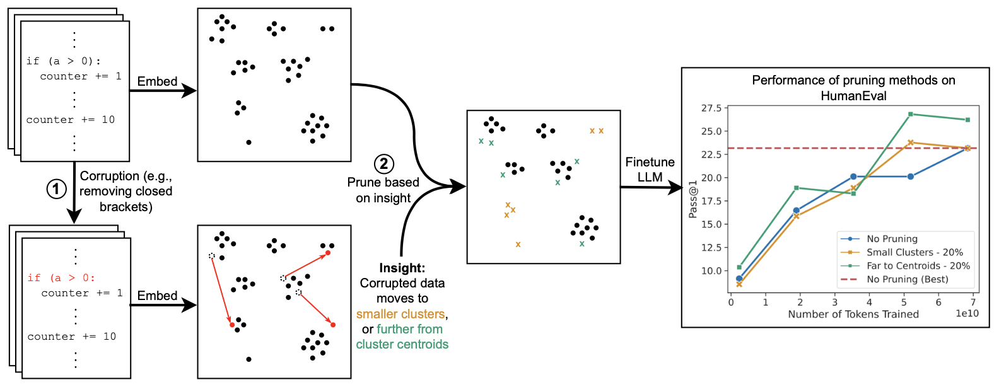
|
Decoding data quality via synthetic corruptions: embedding-guided pruning of code data
Yu Yang,
Aaditya K. Singh,
Mostafa Elhoushi,
Anas Mahmoud,
Kushal Tirumala,
Fabian Gloeckle,
Baptiste Rozière,
Carole-Jean Wu,
Ari S. Morcos,
Newsha Ardalani
Efficient Natural Language and Speech Processing Workshop @ NeurIPS, 2023 (Oral)
arxiv |
tweet |
show bibtex
Code datasets, often collected from diverse and uncontrolled sources such as GitHub, potentially suffer from quality issues, thereby affecting the performance and training efficiency of Large Language Models (LLMs) optimized for code generation. First, we explore features of "low-quality" code in embedding space, through the use of synthetic corruptions. Armed with this knowledge, we devise novel pruning metrics that operate in embedding space to identify and remove low-quality entries in the Stack dataset. We demonstrate the benefits of this synthetic corruption informed pruning (SCIP) approach on the well-established HumanEval and MBPP benchmarks, outperforming existing embedding-based methods.
@misc{yang2023scip,
title={Decoding Data Quality via Synthetic Corruptions: Embedding-guided Pruning of Code Data},
author={Yu Yang and Aaditya K. Singh and Mostafa Elhoushi and Anas Mahmoud and Kushal Tirumala and Fabian Gloeckle and Baptiste Rozière and Carole-Jean Wu and Ari S. Morcos and Newsha Ardalani},
year={2023},
eprint={2312.02418},
archivePrefix={arXiv},
primaryClass={cs.CL},
url={https://arxiv.org/abs/2312.02418},
}
|
|
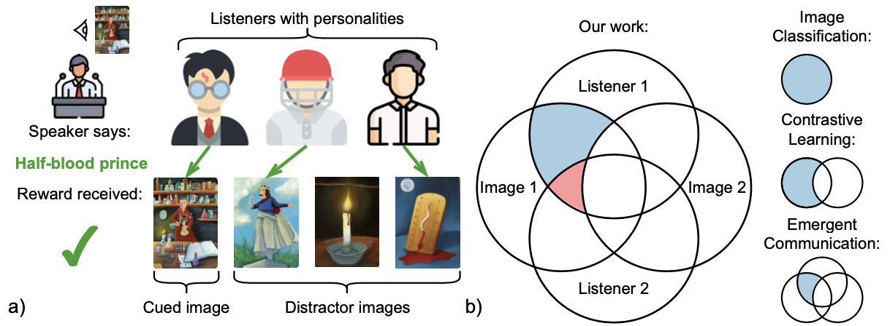
|
Know your audience: specializing grounded language models with listener subtraction
Aaditya K. Singh,
David Ding,
Andrew M. Saxe,
Felix Hill,
Andrew Kyle Lampinen
European chapter of the Association for Computational Linguistics (EACL), 2023
arxiv |
ACL Anthology |
tweet |
show bibtex
Effective communication requires adapting to the idiosyncrasies of each communicative context--such as the common ground shared with each partner. Humans demonstrate this ability to specialize to their audience in many contexts, such as the popular game Dixit. We take inspiration from Dixit to formulate a multi-agent image reference game where a (trained) speaker model is rewarded for describing a target image such that one (pretrained) listener model can correctly identify it among distractors, but another listener cannot. To adapt, the speaker must exploit differences in the knowledge it shares with the different listeners. We show that finetuning an attention-based adapter between a CLIP vision encoder and a large language model in this contrastive, multi-agent setting gives rise to context-dependent natural language specialization from rewards only, without direct supervision.
@inproceedings{singh-etal-2023-know,
title = "Know your audience: specializing grounded language models with listener subtraction",
author = "Singh, Aaditya K and Ding, David and Saxe, Andrew and Hill, Felix and Lampinen, Andrew",
editor = "Vlachos, Andreas and Augenstein, Isabelle",
booktitle = "Proceedings of the 17th Conference of the European Chapter of the Association for Computational Linguistics",
month = may,
year = "2023",
address = "Dubrovnik, Croatia",
publisher = "Association for Computational Linguistics",
url = "https://aclanthology.org/2023.eacl-main.279",
doi = "10.18653/v1/2023.eacl-main.279",
pages = "3884--3911",
}
Our Perceiver IO-inspired cross-attention adapter was used by concurrent work and shown to be generally useful for image captioning.
|
|
Neuroscience
|
|
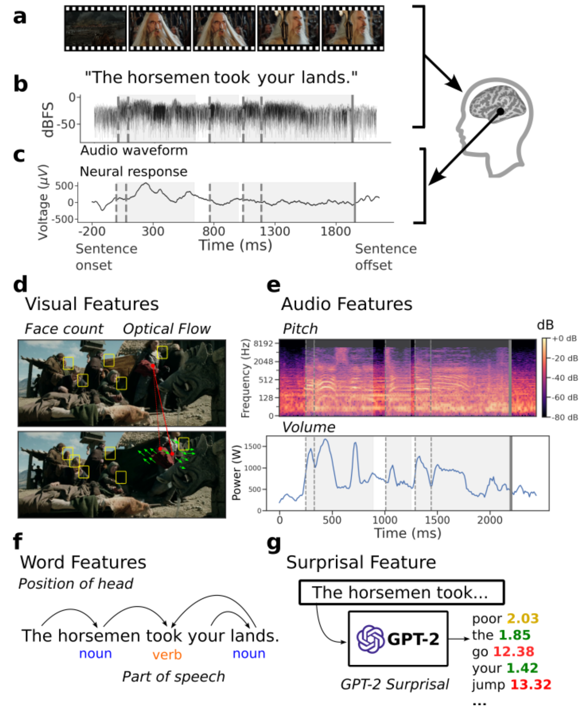
|
Brain Treebank: Large-scale intracranial recordings from naturalistic language stimuli
Christopher Wang*,
Adam Yaari*,
Aaditya K. Singh,
Vighnesh Subramaniam,
Dana Rosenfarb,
Jan DeWitt,
Pranav Misra,
Joseph R. Madsen,
Scellig Stone,
Gabriel Kreiman,
Boris Katz,
Ignacio Cases,
Andrei Barbu,
Neural Information Processing Systems (NeurIPS), 2024 (Oral)
project page |
neurips |
pdf |
show bibtex
We present the Brain Treebank, a large-scale dataset of electrophysiological neural responses, recorded from intracranial probes while 10 subjects watched one or more Hollywood movies. Subjects watched on average 2.6 Hollywood movies, for an average viewing time of 4.3 hours, and a total of 43 hours. The audio track for each movie was transcribed with manual corrections. Word onsets were manually annotated on spectrograms of the audio track for each movie. Each transcript was automatically parsed and manually corrected into the universal dependencies (UD) formalism, assigning a part of speech to every word and a dependency parse to every sentence. In total, subjects heard over 38,000 sentences (223,000 words), while they had on average 168 electrodes implanted. This is the largest dataset of intracranial recordings featuring grounded naturalistic language, one of the largest English UD treebanks in general, and one of only a few UD treebanks aligned to multimodal features. We hope that this dataset serves as a bridge between linguistic concepts, perception, and their neural representations. To that end, we present an analysis of which electrodes are sensitive to language features while also mapping out a rough time course of language processing across these electrodes.
@inproceedings{wang2024braintreebank,
author = {Wang, Christopher and Yaari, Adam and Singh, Aaditya and Subramaniam, Vighnesh and Misra, Pranav and Madsen, Joseph and Stone, Scellig and Kreiman, Gabriel and Katz, Boris and Cases, Ignacio and Barbu, Andrei},
title = {Brain Treebank: Large-scale intracranial recordings from naturalistic language stimuli},
year = {2024}
}
|
|